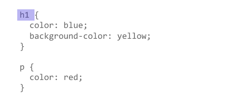

A CSS selector is the first part of a CSS Rule. It is a pattern of elements and other terms that tell the browser which HTML elements should have the CSS property values inside the rule applied to them. The element or elements selected by the selector are referred to as the subject of the selector.

A type selector is sometimes called a tag name selector or element selector because it selects an HTML tag/element in your document.
The case-sensitive class selector starts with a dot (.) character. It will select everything
in the document with that class applied to it.